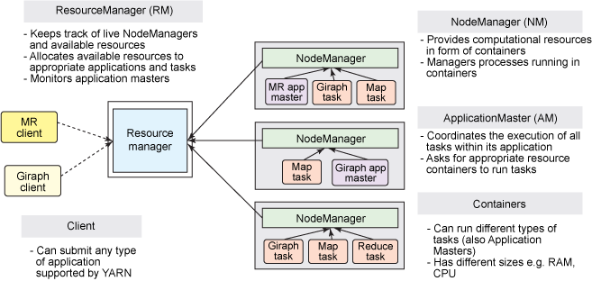
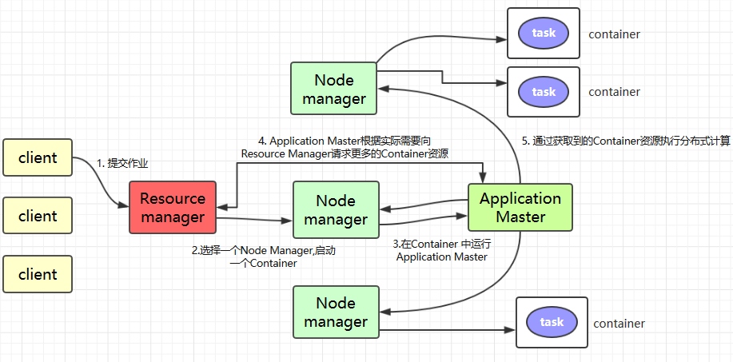

大数据
Contents
大数据¶
Hadoop 生态系统¶
Hadoop在广义上指一个生态圈，泛指大数据技术相关的开源组件或产品，不仅包含hadoop，还包括保证hadoop框架正常高效运行其他框架，如HBase，Hive，Spark，Zookeeper，Kafka，flume等辅助框架
Zookeeper：是一个开源的分布式应用程序协调服务,基于zookeeper可以实现同步服务，配置维护，命名服务。
Flume：一个高可用的，高可靠的，分布式的海量日志采集、聚合和传输的系统。
Hbase：是一个分布式的、面向列的开源数据库, 利用Hadoop HDFS作为其存储系统。
Hive：基于Hadoop的一个数据仓库工具，可以将结构化的数据档映射为一张数据库表，并提供简单的sql 查询功能，可以将sql语句转换为MapReduce任务进行运行。
Sqoop：将一个关系型数据库中的数据导进到Hadoop的 HDFS中，也可以将HDFS的数据导进到关系型数据库中。
Hadoop¶
Apache Hadoop软件库是一个软件框架，它允许使用简单的编程模型，以一种可靠、高效、可伸缩的方式实现跨计算机集群的大型数据集的分布式处理。
它最初的设计目的是为了检测和处理应用程序层的故障，从单个机器扩展到数千台机器（这些机器可以很便宜），每个机器提供本地计算和存储，而不是依靠硬件提供高可靠性。
整个源头是 Google 发的三篇论文， Hadoop 的 MapReduce/HDFS/HBase 分别对应 Google 的 MapReduce/GFS/Big Table
主要包括三部分内容：Hdfs，MapReduce，Yarn：
分布式文件系统：HDFS —— 实现将文件分布式存储在很多的服务器上
分布式运算编程框架：MapReduce —— 实现在很多机器上分布式并行运算
分布式资源调度平台：YARN —— 帮用户调度大量的 MapReduce 程序，并合理分配运算资源
HDFS¶
HDFS，是 Hadoop Distributed File System 的简称，是 Hadoop 抽象分布式文件系统的一种实现。
实现上：Hadoop 抽象文件系统可以与本地系统、Amazon S3 等集成，甚至可以通过 Web 协议（webhsfs）来操作。
传统的文件系统是单机的，不能横跨不同的机器；HDFS 的文件分布在集群机器上，例如客户端写入读取文件的直接操作都是分布在集群各个机器上的，没有单点性能压力，因此 HDFS 的设计本质上是为了大量的数据能横跨成百上千台机器，提供高吞吐量的服务，同时提供副本进行容错及高可靠性保证（计算机节点很容易出现硬件故障，而不管是 Google 公司的计算平台还是 Hadoop 计算平台都将硬件故障作为常态，通过软件设计来保证系统的可靠性）。
由于 Hadoop 被设计运行在廉价的机器上，这意味着硬件是不可靠的，为了保证容错性，HDFS 提供了数据复制机制。HDFS 将每一个文件存储为一系列块，每个块由多个副本来保证容错，块的大小和复制因子可以自行配置（默认情况下，块大小是 128M，默认复制因子是 3）
使用 HDFS 时，用户看到的是一个文件系统而不是很多文件系统，比如说要获取 /hdfs/tmp/file1 的数据，引用的是一个文件路径，但是实际的数据存放在很多不同的机器上，作为用户，不需要知道这些，就好比在单机上我们不关心文件分散在什么磁道什么扇区一样，HDFS 为用户管理这些数据。
优点：
高容错：由于 HDFS 采用数据的多副本方案，所以部分硬件的损坏不会导致全部数据的丢失。
高吞吐量：HDFS 设计的重点是支持高吞吐量的数据访问，而不是低延迟的数据访问。
大文件支持：HDFS 适合于大文件的存储，文档的大小应该是是 GB 到 TB 级别的。
**简单一致性模型：**HDFS 更适合于一次写入多次读取 (write-once-read-many) 的访问模型。支持将内容追加到文件末尾，但不支持数据的随机访问，不能从文件任意位置新增数据。
跨平台移植性：HDFS 具有良好的跨平台移植性，这使得其他大数据计算框架都将其作为数据持久化存储的首选方案。
架构原理¶
HDFS采用Master/Slave架构。一个HDFS集群包含一个单独的NameNode和多个DataNode。

Client：客户端。
文件切分。文件上传HDFS的时候，Client将文件切分成一个一个的Block，然后进行存储；
与NameNode交互，获取文件的位置信息；
与DataNode交互，读取或者写入数据；
Client提供一些命令来管理HDFS，比如启动或者关闭HDFS；
Client可以通过一些命令来访问HDFS；
NameNode作为Master服务，它负责管理文件系统的命名空间和客户端对文件的访问。 负责执行有关
文件系统命名空间的操作，例如打开，关闭、重命名文件和目录等。它同时还负责集群元数据的存储，记录着文件中各个数据块的位置信息。帮助client来
Maps a filename to list of Block IDs
Maps each Block ID to DataNodes containing a replica of the block
Returns list of BlockIDs along with locations of their replicas
NameNode会保存文件系统的具体信息，包括文件信息、文件被分割成具体block块的信息、以及每一个block块归属的DataNode的信息。
对于整个集群来说，HDFS通过NameNode对用户提供了一个单一的命名空间。
DataNode作为Slave服务，在集群中可以存在多个。通常每一个DataNode都对应于一个物理节点。DataNode负责管理节点上它们拥有的存储，它将存储划分为多个block块，管理block块信息，同时周期性的将其所有的block块信息发送给NameNode。
Maps a Block ID to a physical location on disk
Sends data back to client
Secondary NameNode：并非NameNode的热备。当NameNode挂掉的时候，它并不能马上替换NameNode并提供服务。
辅助NameNode，分担其工作量；
定期合并Fsimage和Edits（编辑日志与命名空间镜像），并推送给NameNode，给namenode提供一些容错机制（不然namenode挂了之后所有的文件会因为无法重建datanode而丢失）
在紧急情况下，可辅助恢复NameNode。
Note
为什么hadoop让client来读写datanode，而不是让Namenode找到filename之后直接操作
NameNode 和 DataNode 可能 sit in separate server！
可能有几千个datanode但只有一个name node，如果很多requests都停在namenode上，那么namenode会花时间processing all these request and might become the bottleneck
执行流程¶
首先明确Block size——一个文件会被拆成的小block有多大；replication factor——一个block会被存在几个地方
写文件
Clinet将文件切分
Client对每一个数据块：
Client询问Namenode
Namenode分配DataNode，并按距离排序
Client把数据发给第一个datanode存储
第一个Datanode存储后告诉下一个datanode存储
最后一个Datanode完成后通知Namenode
Nanenode告诉client完成
关闭文件，namenode中永久存储meta
读文件
用户请求Client、Client告诉namenode filename
Namenode：返回你的file被拆分的block ids，和每个block存储的datanode列表
client从最近的datanode开始按顺序一个个下载block
MapReduce¶
Hadoop MapReduce 是一个分布式计算框架，用于编写批处理应用程序。编写好的程序可以提交到 Hadoop 集群上用于并行处理大规模的数据集。
Mapper: 当你向MapReduce框架提交一个计算作业时，它会首先把计算作业拆分成若干个Map任务，然后分配到不同的节点上去执行，每一个Map任务处理输入数据中的一部分。
Reducer: 当Map任务完成后，它会生成一些中间文件，这些中间文件将会作为Reduce任务的输入数据。Reduce任务的主要目标就是把前面若干个Map的输出汇总并输出。
MapReduce编程模型¶
Input首先map task会从本地文件系统读取数据，转换成key-value形式的键值对集合使用的是hadoop内置的数据类型，比如longwritable、text等
Mapping将键值对集合输入mapper进行业务处理过程，将其转换成需要的key-value再输出进行一个partition分区操作
默认使用的是hashpartitioner，可以通过重写hashpartitioner的getpartition方法来自定义分区规则
Shuffling对key进行进行sort排序，grouping分组操作将相同key的value合并分组输出可以使用自定义的数据类型，重写WritableComparator的Comparator方法来自定义排序规则，重写RawComparator的compara方法来自定义分组规则
(optional)
Combining进行一个combiner归约操作，其实就是一个本地段的reduce预处理，以减小后面shufle和reducer的工作量Reducingreduce task会通过网络将各个数据收集进行reduce处理最后将数据保存或者显示，结束整个job
Yarn¶
Apache YARN (Yet Another Resource Negotiator) 是 hadoop 2.0 引入的集群资源管理系统。用户可以将各种服务框架部署在 YARN 上，由 YARN 进行统一地管理和资源分配。

架构¶

ResourceManager：通常在独立的机器上以后台进程的形式运行，它是整个集群资源的主要协调者和管理者。
ResourceManager负责给用户提交的所有应用程序分配资源，它根据应用程序优先级、队列容量、ACLs、数据位置等信息，做出决策，然后以共享的、安全的、多租户的方式制定分配策略，调度集群资源。NodeManager：
NodeManager是 YARN 集群中的每个具体节点的管理者。主要负责该节点内所有容器的生命周期的管理，监视资源和跟踪节点健康。具体如下：启动时向
ResourceManager注册并定时发送心跳消息，等待ResourceManager的指令；维护
Container的生命周期，监控Container的资源使用情况；管理任务运行时的相关依赖，根据
ApplicationMaster的需要，在启动Container之前将需要的程序及其依赖拷贝到本地。
ApplicationMaster：在用户提交一个应用程序时，YARN 会启动一个轻量级的进程
ApplicationMaster。ApplicationMaster负责协调来自ResourceManager的资源，并通过NodeManager监视容器内资源的使用情况，同时还负责任务的监控与容错。具体如下：根据应用的运行状态来决定动态计算资源需求；
向
ResourceManager申请资源，监控申请的资源的使用情况；跟踪任务状态和进度，报告资源的使用情况和应用的进度信息；
负责任务的容错。
Container：
Container是 YARN 中的资源抽象，它封装了某个节点上的多维度资源，如内存、CPU、磁盘、网络等。当 AM 向 RM 申请资源时，RM 为 AM 返回的资源是用Container表示的。YARN 会为每个任务分配一个Container，该任务只能使用该Container中描述的资源。ApplicationMaster可在Container内运行任何类型的任务。例如，MapReduce ApplicationMaster请求一个容器来启动 map 或 reduce 任务，而Giraph ApplicationMaster请求一个容器来运行 Giraph 任务。
工作原理¶
简单版：

Client提交作业到 YARN 上；Resource Manager选择一个Node Manager，启动一个Container并运行Application Master实例；Application Master根据实际需要向Resource Manager请求更多的Container资源（如果作业很小, 应用管理器会选择在其自己的 JVM 中运行任务）；Application Master通过获取到的Container资源执行分布式计算。
Spark¶
Spark Core¶
Spark 于 2009 年诞生于加州大学伯克利分校 AMPLab，2013 年被捐赠给 Apache 软件基金会，2014 年 2 月成为 Apache 的顶级项目。相对于 MapReduce 的批处理计算，Spark 可以带来上百倍的性能提升，因此它成为继 MapReduce 之后，最为广泛使用的分布式计算框架。
Apache Spark 特点：
使用先进的 DAG 调度程序，查询优化器和物理执行引擎，以实现性能上的保证；
多语言支持，目前支持的有 Java，Scala，Python 和 R；
提供了 80 多个高级 API，可以轻松地构建应用程序；
支持批处理，流处理和复杂的业务分析；
丰富的类库支持：包括 SQL，MLlib，GraphX 和 Spark Streaming 等库，并且可以将它们无缝地进行组合；
丰富的部署模式：支持本地模式和自带的集群模式，也支持在 Hadoop，Mesos，Kubernetes 上运行；
多数据源支持：支持访问 HDFS，Alluxio，Cassandra，HBase，Hive 以及数百个其他数据源中的数据。

架构：
Term（术语） |
Meaning（含义） |
|---|---|
Application |
Spark 应用程序，由集群上的一个 Driver 节点和多个 Executor 节点组成。 |
Driver program |
主运用程序，该进程运行应用的 main() 方法并且创建 SparkContext |
Cluster manager |
集群资源管理器（例如，Standlone Manager，Mesos，YARN） |
Worker node |
执行计算任务的工作节点 |
Executor |
位于工作节点上的应用进程，负责执行计算任务并且将输出数据保存到内存或者磁盘中 |
Task |
被发送到 Executor 中的工作单元 |

执行过程：
用户程序创建 SparkContext 后，它会连接到集群资源管理器，集群资源管理器会为用户程序分配计算资源，并启动 Executor；
Driver 将计算程序划分为不同的执行阶段和多个 Task，之后将 Task 发送给 Executor；
Executor 负责执行 Task，并将执行状态汇报给 Driver，同时也会将当前节点资源的使用情况汇报给集群资源管理器。
**核心组件：**Spark 基于 Spark Core 扩展了四个核心组件，分别用于满足不同领域的计算需求。

Spark SQL 主要用于结构化数据的处理。其具有以下特点：
能够将 SQL 查询与 Spark 程序无缝混合，允许您使用 SQL 或 DataFrame API 对结构化数据进行查询；
支持多种数据源，包括 Hive，Avro，Parquet，ORC，JSON 和 JDBC；
支持 HiveQL 语法以及用户自定义函数 (UDF)，允许你访问现有的 Hive 仓库；
支持标准的 JDBC 和 ODBC 连接；
支持优化器，列式存储和代码生成等特性，以提高查询效率。
Spark Streaming：Spark Streaming 主要用于快速构建可扩展，高吞吐量，高容错的流处理程序。支持从 HDFS，Flume，Kafka，Twitter 和 ZeroMQ 读取数据，并进行处理。

Spark Streaming 的本质是微批处理，它将数据流进行极小粒度的拆分，拆分为多个批处理，从而达到接近于流处理的效果。

MLlib： Spark 的机器学习库。其设计目标是使得机器学习变得简单且可扩展。它提供了以下工具：
常见的机器学习算法：如分类，回归，聚类和协同过滤；
特征化：特征提取，转换，降维和选择；
管道：用于构建，评估和调整 ML 管道的工具；
持久性：保存和加载算法，模型，管道数据；
实用工具：线性代数，统计，数据处理等。
GraphX 是 Spark 中用于图形计算和图形并行计算的新组件。在高层次上，GraphX 通过引入一个新的图形抽象来扩展 RDD(一种具有附加到每个顶点和边缘的属性的定向多重图形)。为了支持图计算，GraphX 提供了一组基本运算符（如： subgraph，joinVertices 和 aggregateMessages）以及优化后的 Pregel API。此外，GraphX 还包括越来越多的图形算法和构建器，以简化图形分析任务。
Spark RDD¶
Transformations¶
在一个已经存在的 RDD 上创建一个新的 RDD, 将旧的 RDD 的数据转 换为另外一种形式后放入新的 RDD。
The following table lists some of the common transformations supported by Spark. Refer to the RDD API doc (Scala, Java, Python, R) and pair RDD functions doc (Scala, Java) for details.
Transformation |
Meaning |
|---|---|
map(func) |
对RDD每个元素按照func定义的逻辑进行一对一处理. Return a new distributed dataset formed by passing each element of the source through a function func. |
filter(func) |
Return a new dataset formed by selecting those elements of the source on which func returns true. |
flatMap(func) |
map成list + flatten展开list——对RDD中每个元素按照func函数定义的处理逻辑进行操作，并将结果进行扁平化处理. Similar to map, but each input item can be mapped to 0 or more output items (so func should return a Seq rather than a single item). |
mapPartitions(func) |
Similar to map, but runs separately on each partition (block) of the RDD, so func must be of type Iterator |
mapPartitionsWithIndex(func) |
Similar to mapPartitions, but also provides func with an integer value representing the index of the partition, so func must be of type (Int, Iterator |
sample(withReplacement, fraction, seed) |
Sample a fraction fraction of the data, with or without replacement, using a given random number generator seed. |
union(otherDataset) |
Return a new dataset that contains the union of the elements in the source dataset and the argument. |
intersection(otherDataset) |
Return a new RDD that contains the intersection of elements in the source dataset and the argument. |
distinct([numPartitions])) |
Return a new dataset that contains the distinct elements of the source dataset. |
groupByKey([numPartitions]) |
函数根据具有相同key的value进行分组,返回相同key下values的迭代。When called on a dataset of (K, V) pairs, returns a dataset of (K, Iterable |
reduceByKey(func, [numPartitions]) |
When called on a dataset of (K, V) pairs, returns a dataset of (K, V) pairs where the values for each key are aggregated using the given reduce function func, which must be of type (V,V) => V. Like in |
aggregateByKey(zeroValue)(seqOp, combOp, [numPartitions]) |
When called on a dataset of (K, V) pairs, returns a dataset of (K, U) pairs where the values for each key are aggregated using the given combine functions and a neutral “zero” value. Allows an aggregated value type that is different than the input value type, while avoiding unnecessary allocations. Like in |
sortByKey([ascending], [numPartitions]) |
When called on a dataset of (K, V) pairs where K implements Ordered, returns a dataset of (K, V) pairs sorted by keys in ascending or descending order, as specified in the boolean |
join(otherDataset, [numPartitions]) |
When called on datasets of type (K, V) and (K, W), returns a dataset of (K, (V, W)) pairs with all pairs of elements for each key. Outer joins are supported through |
cogroup(otherDataset, [numPartitions]) |
When called on datasets of type (K, V) and (K, W), returns a dataset of (K, (Iterable |
cartesian(otherDataset) |
When called on datasets of types T and U, returns a dataset of (T, U) pairs (all pairs of elements). |
pipe(command, [envVars]) |
Pipe each partition of the RDD through a shell command, e.g. a Perl or bash script. RDD elements are written to the process’s stdin and lines output to its stdout are returned as an RDD of strings. |
coalesce(numPartitions) |
Decrease the number of partitions in the RDD to numPartitions. Useful for running operations more efficiently after filtering down a large dataset. |
repartition(numPartitions) |
Reshuffle the data in the RDD randomly to create either more or fewer partitions and balance it across them. This always shuffles all data over the network. |
repartitionAndSortWithinPartitions(partitioner) |
Repartition the RDD according to the given partitioner and, within each resulting partition, sort records by their keys. This is more efficient than calling |
Actions¶
执行各个分区的计算任务, 将的到的结果返回到 Driver 中。如reduce, collect, show
The following table lists some of the common actions supported by Spark. Refer to the RDD API doc (Scala, Java, Python, R)
and pair RDD functions doc (Scala, Java) for details.
Action |
Meaning |
|---|---|
reduce(func) |
Aggregate the elements of the dataset using a function func (which takes two arguments and returns one). The function should be commutative and associative so that it can be computed correctly in parallel. 注意——reduce则没有相同Key归并的操作，而是将所有值统一归并，一并处理。 |
collect() |
Return all the elements of the dataset as an array at the driver program. This is usually useful after a filter or other operation that returns a sufficiently small subset of the data. |
count() |
Return the number of elements in the dataset. |
first() |
Return the first element of the dataset (similar to take(1)). |
take(n) |
Return an array with the first n elements of the dataset. |
takeSample(withReplacement, num, [seed]) |
Return an array with a random sample of num elements of the dataset, with or without replacement, optionally pre-specifying a random number generator seed. |
takeOrdered(n, [ordering]) |
Return the first n elements of the RDD using either their natural order or a custom comparator. |
saveAsTextFile(path) |
Write the elements of the dataset as a text file (or set of text files) in a given directory in the local filesystem, HDFS or any other Hadoop-supported file system. Spark will call toString on each element to convert it to a line of text in the file. |
saveAsSequenceFile(path) (Java and Scala) |
Write the elements of the dataset as a Hadoop SequenceFile in a given path in the local filesystem, HDFS or any other Hadoop-supported file system. This is available on RDDs of key-value pairs that implement Hadoop’s Writable interface. In Scala, it is also available on types that are implicitly convertible to Writable (Spark includes conversions for basic types like Int, Double, String, etc). |
saveAsObjectFile(path) (Java and Scala) |
Write the elements of the dataset in a simple format using Java serialization, which can then be loaded using |
countByKey() |
Only available on RDDs of type (K, V). Returns a hashmap of (K, Int) pairs with the count of each key. |
foreach(func) |
Run a function func on each element of the dataset. This is usually done for side effects such as updating an Accumulator or interacting with external storage systems. Note: modifying variables other than Accumulators outside of the |
The Spark RDD API also exposes asynchronous versions of some actions, like foreachAsync for foreach, which immediately return a FutureAction to the caller instead of blocking on completion of the action. This can be used to manage or wait for the asynchronous execution of the action.
Spark SQL / DataFrame¶
The foundation of Spark is Spark Core, which provides distributed data execution on resilient distributed dataset (RDD) through multiple application programming interface (Java, Python, Scala, and R).

Built upon spark core, Spark ecosystem is composed of the several modules. One of them is spark dataframe, which we will focus on its python version in this tutorial!
The problems that Spark solves:
Since a decade ago, databases have rapidly outgrown the capabilities of a single machine to handle the ever-increasing load with tolerable latency.
When a single node’s hardware upgrade (increasing memory, storage, or hiring better CPUs) is too expensive to justify the expense, another option to meet this demand is to utilize more machines!
Then came Hadoop, with its HDFS + YARN + MapReduce software framework:
HDFS(Hadoop Distributed File System)is for distributedly storing data, which has become the industry standard now. #Still in useYARN(Yet Another Resource Negotiator)allocates computational resources to various applications. #Still in useMapReduceis the programming model. It is designed to processes data through map function, implicitly combine and partition, and then the reduce funtion. A good tutorial of MapReduce.However, due to lack of abstraction for utilizing distributed memory, the default Hadoop MapReduce will costly run lots of I/O for intermediate data to a stable file system (e.g. HDFS). Furthermore, the Map + Reduce framework cannot define some complex data processing procedures, especially those involving joining. #Not used ver often
Then Spark came out, replacing the MapReduce module of Hadoop infrastructure to make it fast! Besides Scala, it also supports Java, python and R, which is important given the typical skillset of today’s data engineer. But Spark Core also lacks API for some data transformation processes like built-in aggregation functions.
How does Spark DataFrame solve the problems:
Spark’s in-memory: Unlike Hadoop MapReduce, Spark stores intermediate results in memory, which highly save cost of I/O to disk and make calculations fast.
Built upon Spark RDD: Spark RDD is the data structure in Spark Core, which allows developers implicitly store imtermediate data set in the memory, and perform much more flexible MapReduce like data operations.
Spark DataFrame: Built upon Spark Core, Spark dataframe another powerful data abstraction in Spark. It implements the
tablein the relational database schema, making spark code easier to write when developers are dealing with structureal or semi-structural datasets.
What are the alternatives, and what are the pros and cons of Spark DataFrame compared with alternatives? (what makes it unique?)
Spark DataFrame
Alternatives
Pros
Compatibility with the Hadoop framework:, it can run in Hadoop Yarn, Apache Mesos, Kubernetes, clusters, and it can connect to a number of databases such as HBase, HDFS, Hive, and Cassandra.
PostgreSQL, DucksDB, ···
Unify: Prior to the advent of Spark, multiple Big Data tools had to be deployed in an organization to perform multiple Big Data analytics tasks, such as Hadoop for offline analytics, MapReduce for querying data, Hive for querying data, Storm for streaming data processing, and Mahout for machine learning. This complicates the development of large data systems and leads to complex system operations and maintenance.
Spark instead unify the data format between many system, serving as the “One Stack to Rule Them All.”, as AMPLab said.Use Hadoop + other tools
Fast: Spark runs 100x faster than Hadoop MapReduce for in-memory based operations, and roughly 10x faster in Hard-disk based operations.
Hadoop MapReduce
Easier to scale: Although SQL is expressive and convenient to program, it is harder than Spark to scale up when the data size goes up to TB and even PB per day.
SQL
Easier to write: dealing with large-scale structured data or semi-structured data, which is very common, spark dataframe provides more built-in functions to process data.
Spark RDD
Cons
In the context of large-scale dataset, spark definitely beats pandas/dplyr(one of R’s dataframe modules) that can only run in single machine with limited memory. But for small data, spark will encounter lots of waste in computational resource in, e.g, reading/storing small random data. Also, now we have communication cost among machines and launching time! And the lazy commit feature of Spark can make you confused at the first time (will show you in the tutorial!)
Pandas/dplyr···
By default, Hadoop data is not encrypted so there is a risk of data leakage if data is transmitted over Internet between nodes
Single machine
Spark和Hadoop的差异¶
Hadoop |
Spark |
|
|---|---|---|
类型 |
基础平台, 包含计算, 存储, 调度 |
分布式计算工具 |
场景 |
大规模数据集上的批处理 |
迭代计算, 交互式计算, 流计算 |
价格 |
对机器要求低, 便宜 |
对内存有要求, 相对较贵 |
编程范式 |
MapReduce, API 较为底层, 算法 适应性差 |
RDD组成DAG有向无环图, API较为 顶层, 方便使用 |
数据存储结 |
MapReduce中间计算结果存在 构 |
RDD中间运算结果存在内存中, 延 HDFS磁盘上, 延迟大 |
运行方式 |
Task以进程方式维护, 任务启动慢 |
Task以线程方式维护, 任务启动快 |
Hive¶
Hive 是一个构建于 Hadoop之上的数据仓库工具，它可以将结构化的数据文件映射成表，并提供类 SQL 查询功能，用于查询的 SQL 语句会被转化为 MapReduce 作业，然后提交到 Hadoop 上运行。
支持大规模数据存储、分析，具有良好的可扩展性。
某种程度上可以看作是用户编程接口，本身不存储和处理数据：Hive 定义了简单的类似 SQL 的查询语言——HiveQL，用户可以通过编写的 HiveQL 语句运行 MapReduce 任务，可以很容易把原来构建在关系数据库上的数据仓库应用程序移植到 Hadoop 平台上。
注意区别分布式计算框架 MapReduce、Storm、Spark，不同的引擎在SQL翻译的逻辑和底层的程序是不一样的
MR 引擎会把 SQL 翻译成 MR
Spark 引擎会把 SQL 翻译成 RDD 程序
Tez 引擎可以理解为在 MR 的基础上做了 DAG 方向的基于内存的 shuffle优化
HQL就是用sql语法来写的mr程序
Hive依赖分布式文件系统 HDFS 存储数据，依赖分布式并行计算模型 MapReduce 处理数据（底层计算的引擎默认是 MapReduce，可以将引擎更换为 Spark/Tez）。
**特点：**Hive 是通过构建元数据，映射 HDFS 文件构建成表，本质还是 HDFS实现的离线大数据仓库。
Hive 并不是一个关系数据库 不能和数据库一样进行实时的CURD操作
Hive 中没有定义专门的数据格式，由用户指定，需要指定三个属性：列分隔符、行分隔符 、读取文件数据的方法（Hive 中默认有三个文件格式 TextFile，SequenceFile 以及 RCFile）。
Hive 在查询数据的时候，由于没有索引，需要扫描整个表，因此延迟较高；另外一个导致 Hive 执行延迟高的因素是 MapReduce 框架，由于 MapReduce 本身具有较高的延迟，因此在利用 MapReduce 执行 Hive 查询时，也会有较高的延迟（相对的，数据库如 MySQL 的执行延迟较低，当然，这个低是有条件的，即数据规模较小，当数据规模大到超过数据库的处理能力的时候，Hive 的并行计算显然能体现出优势）。
形式：
db：在 hdfs 中表现为 ${hive.metastore.warehouse.dir} 目录下一个文件夹
table：在 hdfs 中表现为所属 db 目录下一个文件夹
external table：与 table 类似，不过其数据存放位置可以在任意指定路径
partition：在 hdfs 中表现为 table 目录下的子目录
bucket：在 hdfs 中表现为同一个表目录下根据 hash 散列之后的多个文件
和HDFS的联系：
**Hive 不存储数据：**Hive 需要分析计算的数据，以及计算结果后的数据实际存储在分布式系统上，如 HDFS 上
**Hive 某种程度来说也不进行数据计算：**Hive只是个解释器，只是将用户需要对数据处理的逻辑，通过 SQL 编程提交后解释成 MapReduce 程序，然后将这个 MR 程序提交给 Yarn 进行调度执行，所以实际进行分布式运算的是 MapReduce 程序
架构：
两种操作方式：
command-line shell：通过 hive 命令行的的方式来操作数据；
thrift／jdbc：通过 thrift 协议按照标准的 JDBC 的方式操作数据
Metastore
在 Hive 中，表名、表结构、字段名、字段类型、表的分隔符等统一被称为元数据。所有的元数据默认存储在 Hive 内置的 derby 数据库中，但由于 derby 只能有一个实例，也就是说不能有多个命令行客户端同时访问，所以在实际生产环境中，通常使用 MySQL 代替 derby。
Hive 进行的是统一的元数据管理，就是说你在 Hive 上创建了一张表，然后在 presto／impala／sparksql 中都是可以直接使用的，它们会从 Metastore 中获取统一的元数据信息，同样的你在 presto／impala／sparksql 中创建一张表，在 Hive 中也可以直接使用。
*HiveQL执行流程：¶
美团技术团队的文章：Hive SQL 的编译过程
语法解析：Antlr 定义 SQL 的语法规则，完成 SQL 词法，语法解析，将 SQL 转化为抽象 语法树 AST Tree；
语义解析：遍历 AST Tree，抽象出查询的基本组成单元 QueryBlock；
生成逻辑执行计划：遍历 QueryBlock，翻译为执行操作树 OperatorTree；
优化逻辑执行计划：逻辑层优化器进行 OperatorTree 变换，合并不必要的 ReduceSinkOperator，减少 shuffle 数据量；
生成物理执行计划：遍历 OperatorTree，翻译为 MapReduce 任务；
优化物理执行计划：物理层优化器进行 MapReduce 任务的变换，生成最终的执行计划。
存储形式：¶
Hive 会在 HDFS 为每个数据库上创建一个目录，数据库中的表是该目录的子目录，表中的数据会以文件的形式存储在对应的表目录下。Hive 支持以下几种文件存储格式：
格式 |
说明 |
|---|---|
TextFile |
存储为纯文本文件。 这是 Hive 默认的文件存储格式。这种存储方式数据不做压缩，磁盘开销大，数据解析开销大。 |
SequenceFile |
SequenceFile 是 Hadoop API 提供的一种二进制文件，它将数据以<key,value>的形式序列化到文件中。这种二进制文件内部使用 Hadoop 的标准的 Writable 接口实现序列化和反序列化。它与 Hadoop API 中的 MapFile 是互相兼容的。Hive 中的 SequenceFile 继承自 Hadoop API 的 SequenceFile，不过它的 key 为空，使用 value 存放实际的值，这样是为了避免 MR 在运行 map 阶段进行额外的排序操作。 |
RCFile |
RCFile 文件格式是 FaceBook 开源的一种 Hive 的文件存储格式，首先将表分为几个行组，对每个行组内的数据按列存储，每一列的数据都是分开存储。 |
ORC Files |
ORC 是在一定程度上扩展了 RCFile，是对 RCFile 的优化。 |
Avro Files |
Avro 是一个数据序列化系统，设计用于支持大批量数据交换的应用。它的主要特点有：支持二进制序列化方式，可以便捷，快速地处理大量数据；动态语言友好，Avro 提供的机制使动态语言可以方便地处理 Avro 数据。 |
Parquet |
Parquet 是基于 Dremel 的数据模型和算法实现的，面向分析型业务的列式存储格式。它通过按列进行高效压缩和特殊的编码技术，从而在降低存储空间的同时提高了 IO 效率。 |
以上压缩格式中 ORC 和 Parquet 的综合性能突出，使用较为广泛，推荐使用这两种格式。
参考资料¶
GitHub｜heibaiying｜BigData Notes：非常好的资料！还有Flink、Storm等没有整理进去